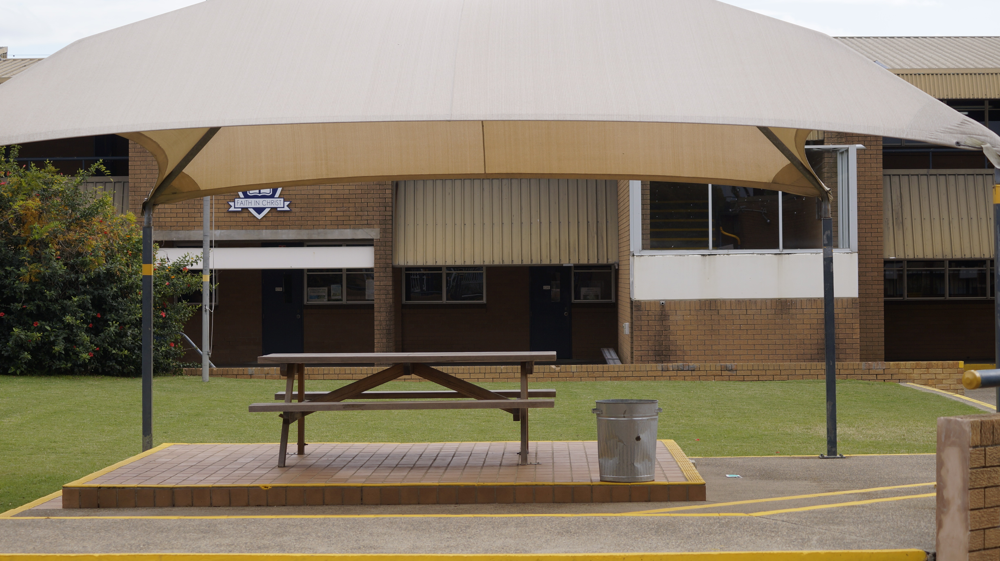
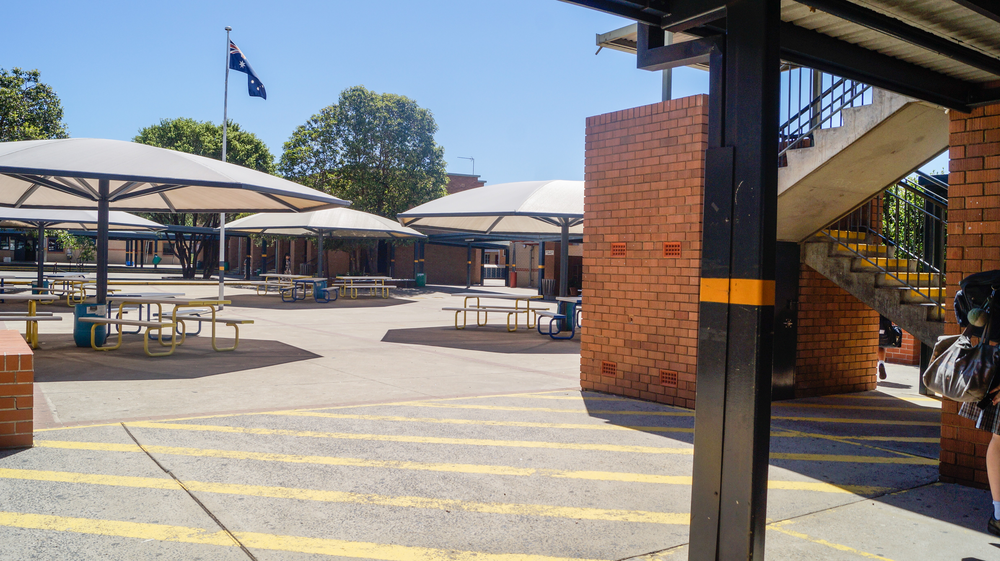

Okay, So, who are you, actually?
That's such a good question!
Hi! I’m Jerica, a 3rd-year Secondary Education and Technologies student at ACU. ✨
I currently volunteer for an assortment of groups and organisations, both in and out of university with varying
leadership and committee responsibilities.
In my free time, I love to be creative with a variety of media, art and textiles.
Beyond all that I do, at my core, I am truly a learner with a
tremendous drive to develop and improve my skills in all facets of my career.
I intend to pursue a future in educational leadership,
reshaping the way we teach and promote Technology and Applied Studies (TAS) in the 21st Century classroom.
I believe young people are truly changemakers in all they do.
And I’m ready to facilitate that change.
I mean, I hope I'm that interesting enough!

POV: University me is trying her best!
A lot of character development and canon events happened. Why not get to know more about it by checking it out?
I think I have a pretty fire Uni playlist that gets me through working. You should listen! People have to listen to it in the quad at uni anyway hehe.
Maybe we think alike, we should talk!

I'm actually very ambitious in my educator career
If you're the same, you and I should get to know each other and how we can very well help each other!
Imagine not watching these amazing TED Ed Talks! Couldn't be me.

Eddie Woo: Mathematics is the sense you never knew you had
In this illuminating talk, high school mathematics teacher and YouTube star Eddie Woo shares his passion for mathematics, declaring that "mathematics is a sense, just like sight and touch" and one we can all embrace.

Rita Pierson: Every kid needs a champion
Rita Pierson, a teacher for 40 years, once heard a colleague say, "They don't pay me to like the kids." Her response: "Kids don't learn from people they don't like.'" A rousing call to educators to believe in their students and actually connect with them on a real, human, personal level.